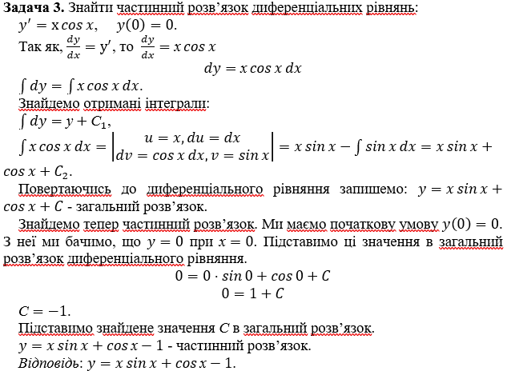

Тема. Диференціальні рівняння з відокремлюваними змінними
В математиці приходиться розглядати рівняння, в яких невідомими є функції. Так задача про знаходження шляху S(t) за заданою швидкістю v(t) зводиться до розв'язування рівняння S'(t) = v(t), де v(t) — задана функція, a S(t) — шукана функція. Наприклад, якщо v(t) = 3 – 4t, то для знаходження S(t) треба розв'язати рівняння S'(t) = 3-4t.
Це рівняння містить похідну невідомої функції. Такі рівняння називаються диференціальними рівняннями.
Рівняння, що зв’язує незалежну змінну х, невідому функцію \(y\left(x\right)\) і її похідні \(y^\prime,...,y^{\left(n\right)}\), називають диференціальним рівнянням.
Диференціальні рівняння класифікують залежно від порядку найвищої похідної, що входить в рівняння.
Порядком диференціального рівняння називають максимальний порядок похідної, що входить до цього рівняння.
Якщо до рівняння входить незалежна змінна, невідома функція і її похідна, то це рівняння називається диференціальним рівнянням першого порядку. Якщо, крім того, в рівняння входить похідна другого порядку від шуканої функції, то рівняння називають диференціальним рівнянням другого порядку.
Розв’язком диференціального рівняння називають будь-яку функцію, при підстановці якої в дане рівняння отримується тотожність.
Графік розв’язку диференціального рівняння називається інтегральною кривою цього рівняння.
Найпростішими є диференціальні рівняння виду \(\frac{dy}{dx}=f\left(x\right)\), де \(f\left(x\right)\) - відома функція, \(у=у\left(x\right)\) - шукана функція.
Так як, \(\frac{dy}{dx}=у^\prime\), то найпростіше диференціальне рівняння можна записати у вигляді \(у^\prime=f\left(x\right)\).
Щоб розв’язати рівняння такого виду, необхідно знайти функцію y за її похідною, а саме \(у=\int{f\left(x\right)dx}\). (1)
Якщо F — одна із первісних для f, то ця рівність записується таким чином: \(у=F\left(x\right)+C\)
Можна побачити, що рівняння (1) має нескінченну множину розв’язків, графіки (тобто інтегральні криві рівняння (1)) яких отримаємо один із другого шляхом паралельного переносу в напрямі осі ординат. При цьому через кожну точку M0 (x0; y0) , таку, що функція f (x) неперервна для x = x0 , проходить одна, й тільки одна, інтегральна крива (див. рисунок).
Функція \(y\left(x,С\right)\), де С – довільна стала, називається загальним розв’язком диференціального рівняння, якщо:
- при будь-якому певному значені сталої С вона є розв’язком цього диференціального рівняння;
- для будь-якої точки M0 (x0; y0) існує єдине значення С0, для якого лінія проходить \(у=y\left(x,С_0\right)\) через точку M0.
Рівняння з відокремлюваними змінними – це диференціальне рівняння виду
\(y^\prime=g\left(x\right)f\left(y\right)\) . (2)
Так як, \(\frac{dy}{dx}=у^\prime\), то рівняння (2) матиме вигляд \(\frac{dy}{dx}=g\left(x\right)f\left(y\right)\). Якщо помножити обидві частини рівності на dx, то диференціальне рівняння (2) можна записати в диференціальній формі
\(dy=g\left(x\right)f\left(y\right)dx\), (3)
в якому шуканою є функція у.
Припускаючи, що \(f\left(y\right)\neq0\) для всіх у з області визначення функції \(f\left(y\right)\), з рівняння (3) знаходимо
\(\frac{dy}{f\left(y\right)}=g\left(x\right)dx\). (4)
Диференціальне рівняння (4) називають рівнянням з відокремленими змінними, а перехід від (3) до (4) – відокремленням змінних у рівнянні (3).
Обидві частини диференціального рівняння (4) є диференціалами функції від змінної х, або \(у=y\left(х\right)\). Оскільки диференціали рівні, то
\(\int\frac{dy}{f\left(y\right)}=\int g\left(x\right)dx+С\), (5)
де під інтегралами розуміють деякі відповідні первісні (вважають, що вони існують), а С – довільна стала. Якщо F — одна із первісних для f, а G — одна із первісних для g, то ця рівність записується таким чином:
\(F\left(у\right)=G\left(x\right)+C\).
Це співвідношення є загальним розв’язком цього диференціального рівняння.
На практиці частіше потрібно знайти не всю множину розв’язків диференціального рівняння, а один або декілька розв’язків, які задовольняють деяким умовам. Ці умови називаються початковими, розв’язок – частинним. Задача відшукання частинного розв’язку називається задачею Коші.
Розв’язок диференціального рівняння при певних значеннях довільної сталої називається частинним розв’язком цього диференціального рівняння.
На практиці здебільшого частинний розв’язок диференціального рівняння знаходять із загального розв’язку, виходячи з деяких умов, яким має задовольняти шуканий частинний розв’язок.
Умови, яким має задовольняти частинний розв’язок диференціального рівняння, називаються початковими.
Задача відшукання частинного розв’язку диференціального рівняння за початковими умовами називається задачею Коші.
Огюсте́н Луї́ Коші́ (21 серпня 1789, Париж — 23 травня 1857) — французький математик, член Паризької академії наук (1816), Петербурзької академії наук (1831).
Роботи Коші належать до різних областей математики. Були періоди, коли Коші щотижня представляв у Паризькій Академії наук нову працю. Усього ж він написав і опублікував понад 800 робіт з арифметики і теорії чисел, алгебри, математичного аналізу, диференціальних рівнянь, теоретичної і небесної механіки, математичної фізики тощо.
В області теорії диференціальних рівнянь Коші належать: постановка однієї з найважливіших загальних задач теорії диференціальних рівнянь (задача Коші), основні теореми існування розв'язку для випадку дійсних і комплексних змінних (для останніх він розвинув метод мажорант) і метод інтегрування рівнянь з частинними похідними 1-го порядку (метод Коші — метод характеристичних смуг).
В алгебрі він розвив теорію визначників, знайшовши всі головні їхні властивості. Коші належать терміни «модуль» комплексного числа, «сполучені» комплексні числа й ін.
Коші належать також дослідження з тригонометрії, механіки, теорії пружності, оптики, астрономії.
